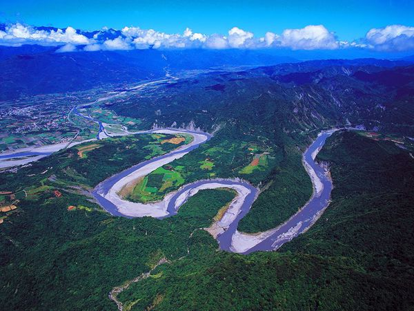

附近景點
花東縱谷
六十石山
六十石山、赤科山、太麻里山為花東縱谷三大金針栽植區，也是每年8月至9月賞金針花海的好去處。
六十石山位在富里鄉竹田村東側海拔約800公尺的海岸山脈上，經過一段蜿蜒的山路後，眼前出現無邊無際的田野景致，幾座農舍、涼亭散落在金黃色的金針花田間，形成一幅樸質的田園畫作。

但為什麼會被叫做六十石山呢？
據當地人說，早在日治時期，一般水田每甲地的穀子收成大約只有四、五十石，而這一帶的稻田每一甲卻可生產六十石縠子，因此被稱做六十石（ㄉㄢˋ）山。
另一種說法則是：在日治時期，這片山區本是一片繁茂的樟樹林，為了煉製樟腦而被砍伐一空。結果發現在空曠的山坡上，散佈著60塊巨大的石頭，所以這裡被命名為六十石（ㄕˊ）山。
吉利潭
四周青山環繞，一汪清潭宛若山間明月，帶點中國風的拱橋倒映在水面上，走在環潭步道上欣賞眼前美景、認識水中生物，為旅人帶走都市的喧囂，這就是隱藏在光復馬錫山下的山中秘境──吉利潭
同時是花蓮近期新興景點，擁有戲水道、生態浮島等設施，為炎炎夏日親子戲水、踏青與認識自然生態的好去處。

吉利潭原本是日治時期遺留下來的儲木池，上游源自一處有三層的瀑布，大小潭蓄滿了清徹的山泉水，是雙色澤蟹、拉氏清溪蟹、菊池氏細鯽等原生動物的棲地，也是光復鄉阿美族的戲水秘境與祈雨聖地。
隨著伐木業沒落而荒蕪的吉利潭，經過整治、美化後，成為認識自然生態的親水公園。
站在橋上聽著潺潺流水聲，或是在涼亭遠眺馬錫山、與親朋好友話家常，清幽的環境是來光復必訪的景點之一。
伯朗大道
在臺東池上鄉的田間道路上，兩旁是隨風搖曳的稻浪，因拍攝伯朗咖啡的廣告而大受歡迎，被稱為「伯朗大道」。
而在伯朗大道的中間，有一條蜿蜒曲折的小路，是金城武曾來這兒騎單車拍攝廣告的地方，兩邊一望無際的綠色稻田隨風搖曳，被譽為是一條「翠綠的天堂之路」。
伯朗大道的正式名稱為錦新三號道路，筆直的道路上兩旁都是遼闊翠綠的稻田，隨著時間轉為金黃、阡陌的黃色稻浪，再加上遠方高低起伏的山巒，宛如明信片上的美麗照片。
在這片無邊無際的稻田中騎單車、散步，讓人遠離城市的喧囂，放鬆身心，沉浸在這番美景中。
在伯朗大道旁的一棵茄冬樹，高聳茂密的樹冠，搭配遠方的稻田風景，成為金城武拍攝廣告其中奉茶片段的場景，而被稱為「金城武樹」，吸引許多追星族或遊客前來拜訪。
秀姑巒溪泛舟
秀姑巒溪發源於秀姑巒山，全長103公里，全年河水豐沛，為臺灣東部最大的河川。河道迂迴，流經瑞穗切穿海岸山脈，形成峽谷與曲流。
每年五月到十月豐水期，可讓遊客體驗泛舟活動的刺激與快感。秀姑巒溪泛舟以奇美為中心，大致可分成二段，前段的航程水流平穩，是培養默契及訓練技術最佳航段。
後段水流非常湍急，漩渦、險灘不斷，不必划槳就能前行，但要小心控制方向，否則容易翻船。
出長虹橋後溪面豁然開闊，皓白的石塊羅列水面，有「秀姑漱玉」之稱。每年6-7月所舉行的秀姑巒溪泛舟觀光季，已成為最重要的泛舟活動。
武陵綠色隧道
武陵綠色隧道位於台九線武陵段，今稱「永嶺路」，入口在台九線357K處附近，全長約4.5公里。此段公路樟樹與木麻黃密林成蔭，兩旁小葉欖仁樹林立，景色宜人的綠色隧道，保持自然風味且極具生態意義。
沿途旅客可以在此徘徊流連或乘騎自行車，優遊於迷人的綠色公路並享受森林芬多精最多的樟樹，夾雜一些木麻黃與小葉欖仁。
平日人與車輛很少，所以在這裡最特別的活動是躺在滿佈林蔭的馬路上，看著陽光穿透樹葉，看著小葉欖仁樹的樹形，體驗與都市不同的步調，盡情放鬆身心與大自然結合
或是騎著鐵馬悠遊林蔭間，欣賞藍天青山的美景，汲取道路旁碧綠茶園的芬芳，偶爾還可見到繽紛的飛行傘翱翔天空，別具恬適田園之樂。
花蓮觀光糖廠
在日治時期所成立的花蓮觀光糖廠，也稱為光復糖廠，是許多單車族休息的據點。
1913年，「東臺製糖株式會社」在花蓮縣壽豐鄉設立「花蓮港製糖所」。
1921年在光復成立大和工廠（現今的光復糖廠），來擴大製糖產量，以供當時的軍資需求。然而在二次世界大戰時，這兩處糖廠被美軍轟炸而損毀，之後由臺糖接手，逐漸修復並轉型為現在的觀光糖廠。

糖廠內販售各式各樣口味的冰品，香甜綿密的冰淇淋、沁涼微甜的冰棒，讓人吃下一口後大呼滿足。
除了吃冰之外，還能體驗DIY手作課程、騎鐵馬遊園區，並且提供日式宿舍給遊客住宿，是來花蓮不可錯過的觀光糖廠。

榨甘蔗所需要的材料及機器

可以讓小孩子體驗榨出甘蔗的過程，感受到平時甘蔗農的辛苦。

逐漸流出甘蔗渣~

經過一番的DIY過程終於成功榨出甘蔗汁了!!

馬太鞍部落
馬太鞍部落位於花蓮縣光復鄉馬錫山山腳下，是阿美族的大部落，範圍含括今日大馬、大平、大同等三個村落。
「馬太鞍」源自阿美族語Vata’an，是「樹豆」的意思，因為早期此地遍植樹豆，所以先民便以「樹豆」命名。
在馬太鞍部落中曾流傳著因不敬而遭亡靈懲罰的故事，所以平時少有人隻身前往走動，此地也就成為部落的禁忌之地。
民國91年，登錄為花蓮縣歷史建築保存。
當地的阿美族人的豐年祭活動以及祭典儀式
掃叭石柱公園
英國的巨石陣、復活島的摩艾巨石像都屬於神秘的巨石文化，而在瑞穗舞鶴台地上，也有一處巨石文化，重達好幾公噸的石柱矗立在地面，那就是Satokoay （舞鶴）遺址，也被稱做掃叭石柱。
舞鶴遺址至今已有3千多年的歷史，屬於史前文化的遺跡，有著許多當地阿美族與撒奇萊雅族的傳說與謎團，讓這兩根高聳的石柱充滿許多的想像空間。
*Satokoay的由來 Satokoay為阿美語，Satoko傳說原為木質的家屋主柱，後來才變成石頭的大石柱；ay（發音:愛）則為所在之處；因此Satokoay為當地阿美人相傳的「家屋主柱的所在之處」，也是祖靈所在的神聖之地。
鹿野高台
鹿野高台擁有絕佳視野，能夠一覽整個高台地區與卑南溪谷底的田野景色，也是臺灣東部一處優良的天然空域活動場地。
每當6月至8月時，正是鹿野高台進行熱氣球活動的好時機，搭乘緩緩升空起飛的熱氣球，徜徉在花東縱谷的美景之中，親身體驗熱氣球起飛的這一份躍動。
從龍田村沿著指標一路往高台走，只見地勢逐漸升高，經過高台茶葉展示中心後不遠，好大一片綠草如茵的寬廣草坡隨即映入眼簾，登上草坡最高處的高眺亭，整個高台地區與縱谷的景色，盡在眼前，一覽無遺。
除此之外，還可以在這邊讓小孩體驗玩滑草板的樂趣

每逢暑假期間，盛大舉辦的臺灣國際熱氣球嘉年華以及光雕音樂會，都吸引來自世界各地的旅人前來參加，熱氣球繫留體驗、熱氣球自由飛行表演、絢麗燦爛的光雕音樂會，或是曙光光雕音樂會等活動，讓人永生難忘。
瑞穗牧場
瑞穗牧場為花蓮縣瑞穗鄉酪農區，位於瑞穗噴灌區與紅葉溪畔，風光明媚，水源潔淨，空氣新鮮，草原豐富，具發展畜牧業潛力，為花蓮縣最大的乳牛養殖區，曾經連續三年拿下全省酪農評比第一名的榮耀，說明其鮮奶品質的濃郁香醇。
早期由10戶酪農所共同組成的瑞穗牧場，選定在地勢平淡、道路、排水電力等公共設施完善的地方，種植牧草，興建牛舍，自美國進口高登錄荷蘭種乳牛飼養，瑞穗牧場在經過酪農朋友們的經營下，已經成為全省知名酪農區
並在之後成功孕育「統一瑞穗鮮奶」，而統一瑞穗鮮奶的初乳來源，就是來自紅葉溪畔的瑞穗牧場，也由於統一公司在各大媒體的宣傳，已成為高品質鮮乳的代名詞。
瑞穗牧場漸漸為觀光走向，因此設有遊客中心、露天咖啡座、自行車道等設施.......
園區還可以讓小孩體驗餵園區動物的新鮮感~


瑞穗牧場中的販賣部，除了可以品嚐每天現擠、現煮的濃、純、香的鮮奶外，還可吃到香噴噴、熱呼呼的鮮奶饅頭，及軟硬適中、充滿奶香的原味牛軋糖，還有乳酪蛋糕、鮮奶酪、乳製冰品等甜點，都深受大朋友小朋友的喜愛~~
販賣部也有各是乳牛造型的馬克杯、餐具、飾品等。除此之外還規劃親子遊憩區、賞鴕鳥區等設施，讓全家大小都能輕鬆悠遊！
舞鶴觀光茶園
海拔100至300公尺的舞鶴台地，依傍高聳的中央山脈，隨風拂來秀姑巒溪與紅葉溪的濕潤水氣，宜人的氣候適合茶樹生長，是天鶴茶的產地，也是小葉綠蟬生長的天堂，經由小葉綠蟬吸吮而製成的蜜香紅茶，微帶淡淡的果香與蜜香，口感溫潤生津，獨特的風味聞名全臺，成為旅人來訪瑞穗必帶的伴手禮之一。
行走花東縱谷山線，開車經過舞鶴台地，放眼望去盡是一片綿延起伏的茶園。
遼闊的舞鶴台地散落著三、四十家自產自銷的茶行，每一家都有獨門的製茶秘法，生產的茶葉以烏龍茶系為主。包含：青心烏龍茶、金萱茶、翠玉包種茶等....
風味絕佳的茶香、有趣的採茶及製茶體驗，深深吸引前訪的旅人駐足停歇，品嘗來自舞鶴臺地的清香好茶。
 333桃園市龜山區德明路5號
333桃園市龜山區德明路5號 TEL:(03)1234-5678
TEL:(03)1234-5678 EMAIL:123456789@gmail.com
EMAIL:123456789@gmail.com